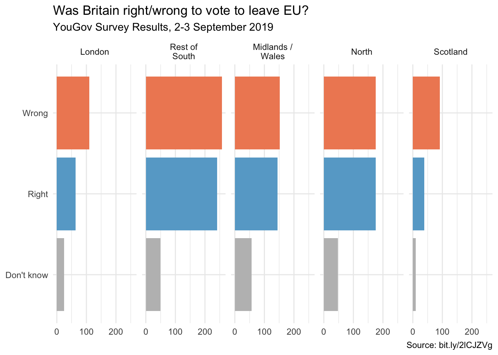

library(tidyverse)Brexit
In September 2019, YouGov survey asked 1,639 GB adults the following question:
In hindsight, do you think Britain was right/wrong to vote to leave EU?
- Right to leave
- Wrong to leave
- Don’t know
The data from the survey is in data/brexit.csv.
brexit <- read_csv("data/brexit.csv")In the course video we made the following visualisation.
brexit <- brexit %>%
mutate(
region = fct_relevel(region, "london", "rest_of_south", "midlands_wales", "north", "scot"),
region = fct_recode(region, London = "london", `Rest of South` = "rest_of_south", `Midlands / Wales` = "midlands_wales", North = "north", Scotland = "scot")
)
ggplot(brexit, aes(y = opinion, fill = opinion)) +
geom_bar() +
facet_wrap(~region, nrow = 1, labeller = label_wrap_gen(width = 12)) +
guides(fill = "none") +
labs(
title = "Was Britain right/wrong to vote to leave EU?",
subtitle = "YouGov Survey Results, 2-3 September 2019",
caption = "Source: bit.ly/2lCJZVg",
x = NULL, y = NULL
) +
scale_fill_manual(values = c(
"Wrong" = "#ef8a62",
"Right" = "#67a9cf",
"Don't know" = "gray"
)) +
theme_minimal()
In this application exercise we tell different stories with the same data.
Exercise 1 - Free scales
Add scales = "free_x" as an argument to the facet_wrap() function. How does the visualisation change? How is the story this visualisation telling different than the story the original plot tells?
ggplot(brexit, aes(y = opinion, fill = opinion)) +
geom_bar() +
facet_wrap(~region,
nrow = 1, labeller = label_wrap_gen(width = 12),
# ___
) +
guides(fill = "none") +
labs(
title = "Was Britain right/wrong to vote to leave EU?",
subtitle = "YouGov Survey Results, 2-3 September 2019",
caption = "Source: bit.ly/2lCJZVg",
x = NULL, y = NULL
) +
scale_fill_manual(values = c(
"Wrong" = "#ef8a62",
"Right" = "#67a9cf",
"Don't know" = "gray"
)) +
theme_minimal()Exercise 2 - Comparing proportions across facets
First, calculate the proportion of wrong, right, and don’t know answers in each category and then plot these proportions (rather than the counts) and then improve axis labeling. How is the story this visualisation telling different than the story the original plot tells? Hint: You’ll need the scales package to improve axis labeling, which means you’ll need to load it on top of the document as well.
# code goes hereExercise 3 - Comparing proportions across bars
Recreate the same visualisation from the previous exercise, this time dodging the bars for opinion proportions for each region, rather than faceting by region and then improve the legend. How is the story this visualisation telling different than the story the previous plot tells?
# code goes here